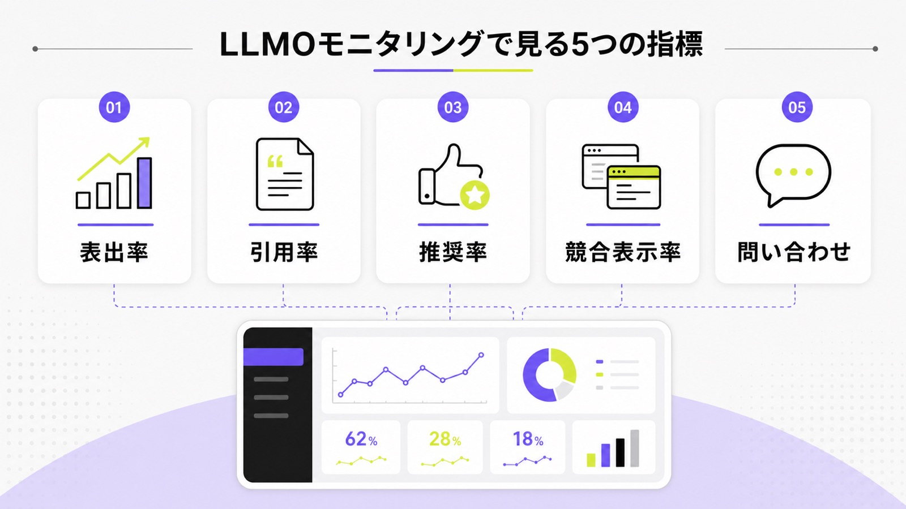
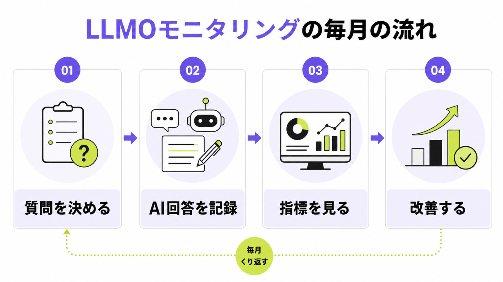
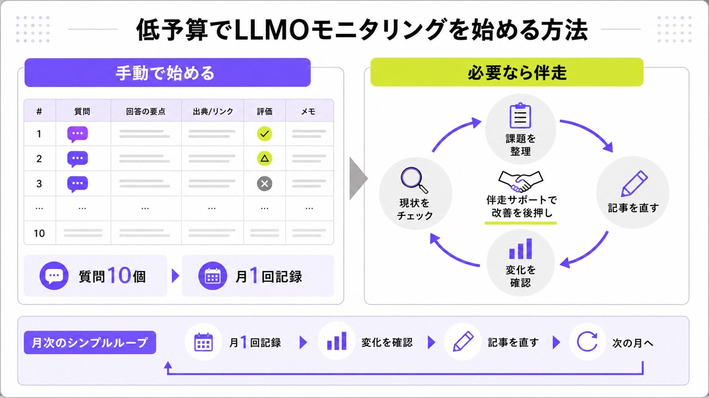

LLMOモニタリングとは？表出率・引用率・推奨率の見方と運用方法

LLMOモニタリングとは、ChatGPT、Google AI Overviews、PerplexityなどのAI回答で、自社名や自社ページがどれくらい出ているかを定期的に見る作業です。
AI検索対策は、記事を作って終わりではありません。毎月同じ質問でAI回答を見て、表出率、引用率、推奨率、競合表示率を記録し、次に直すページを決める必要があります。全体像を先に知りたい方は、LLMO対策とは何かもあわせて確認してください。
この記事では、シート候補の「LLMO モニタリング」の意図に合わせて、初心者でも始めやすい見方、手動管理表の作り方、低予算で続ける運用方法を説明します。
目次

LLMOモニタリングとは何を見る作業か
LLMOモニタリングで見るのは、検索順位だけではありません。AI回答に自社名が出るか、URLが引用されるか、比較候補としてすすめられるか、競合だけが出ていないかを確認します。

表出率・引用率・推奨率を分けて見る
表出率は、調べた質問のうちAI回答に自社名やサービス名が出た割合です。引用率は、自社サイトのURLが根拠として出た割合です。推奨率は、AIが比較候補やおすすめ先として自社を出した割合です。3つを分けると、「名前は出るが根拠ページが弱い」「引用はされるが選ばれていない」など、課題が見えます。LLMOモニタリングでは、数字を分けることが最初のコツです。
たとえば30個の質問を見て、自社名が9回出れば表出率は30％です。そのうち自社URLが3回なら引用率は10％です。さらに「おすすめ会社」として2回出れば推奨率は約7％です。クリック数が少なくても、AI回答内で比較候補に入り始めているなら、改善の芽があります。
“There are no additional technical requirements.”
Googleは、AI OverviewsやAI Modeに出るための特別な技術要件はないと説明しています。だから、LLMOモニタリングでは「AI専用の裏技」を探すより、通常のSEOの土台、分かりやすい本文、信頼できる会社情報、内部リンク、構造化データが実際にAI回答でどう扱われたかを見ます。
月次で見る項目と記録表の作り方
モニタリングは、毎回違う質問を気分で試すと比較できません。最初に質問リスト、対象AI、確認日、記録する項目を固定し、月1回の同じ作業にします。

質問リストを固定して同じ条件で見る
質問は、見込み客が本当に聞きそうな言葉で作ります。「LLMO対策会社 おすすめ」「AI検索対策 費用」「中小企業 LLMO 低予算」「大阪 AI検索対策 会社」のように、比較、費用、地域、業種を入れると商談に近くなります。最初は10〜30問で十分です。重要なのは、毎月同じ質問を同じAIで見ることです。ここを固定すると、前月比で見えるようになります。
質問ごとに、対象AI、日時、ログイン有無、地域設定、回答の要点を残します。AI回答は日によって変わるため、1回だけで判断しないほうが安全です。毎月1回、同じ条件で残すだけでも、記事追加やページ修正の効果を見やすくなります。
回答文・引用URL・競合名を同じ表に残す
記録表には、質問文、AI名、自社名の有無、自社URLの有無、競合名、引用URL、回答文の要点、直すべきページ、メモを入れます。スクリーンショットだけだと後で集計しにくいため、表に残すのがおすすめです。競合が何度も出る質問は、自社に足りない比較表、料金説明、事例、FAQを見つけるヒントになります。LLMOモニタリングは、改善メモまで残すと使いやすくなります。
OpenAIの検索機能を意識する場合は、robots.txtやクロール許可も確認します。ChatGPT Searchで出たいのにOAI-SearchBotを止めていると、モニタリング以前に読まれにくい状態になります。技術確認は難しく見えますが、重要ページがAIや検索エンジンに読めるかを見るだけでも十分です。
“OAI-SearchBot is for search.”
| 記録項目 | 見る意味 | 初心者の見方 |
|---|---|---|
| 自社名の有無 | AIに候補として認識されているか | 出ない質問を優先的に直す |
| 引用URL | どのページが根拠に使われたか | サービスページやFAQが出ているか見る |
| 競合名 | 比較候補を取られていないか | 何度も出る競合のページを確認する |
| 回答の正確性 | 古い情報や誤情報が出ていないか | 料金、住所、サービス範囲を確認する |
| 改善メモ | 次に直すページを決めるため | 記事追加、FAQ追加、内部リンクに分ける |
低予算で始めるLLMOモニタリング手順
高機能ツールを入れる前に、手動で1〜2か月試すと失敗しにくいです。質問、記録項目、社内で直せる範囲が分かってからツールを選べば、使わない機能にお金を払わずに済みます。

Search ConsoleとGA4で足元の変化を見る
AI回答の中だけを見ると、問い合わせへの影響が分かりません。Search Consoleでは、関連キーワードの表示回数、クリック、平均順位を見ます。GA4では、問い合わせ、資料請求、滞在時間、指名検索からの流入を確認します。2026年6月にGoogleは生成AI機能の表示を見られるSearch Consoleレポートも発表しました。使える場合は、AI表示の変化も合わせて見ます。
ただし、すべてのサイトですぐに細かい生成AIデータが見られるとは限りません。だから、最初は「AI回答の記録表」「GSCの検索データ」「問い合わせ数」の3つを合わせて見れば十分です。数字が小さい時期は、1か月で判断せず、3か月ほど同じ方法で見ます。
“Impressions: How often URLs from your site appeared in generative AI features in Search and Discover.”
出典：Google Search Central Blog「Generative AI performance reports」
モニタリング結果を改善につなげる方法
LLMOモニタリングで一番大事なのは、数字を見て終わらないことです。AI回答で弱い質問を見つけたら、記事、サービスページ、FAQ、会社情報、外部掲載のどこを直すかまで決めます。
表を見て直すページを決める
自社名が出ない質問は、そもそもそのテーマのページが足りない可能性があります。自社名は出るのにURLが引用されない場合は、根拠になるページが弱い状態です。競合が何度も出る場合は、比較表、料金、事例、実績、対応地域が不足しているかもしれません。毎月の表を見て、記事を作る、既存記事を直す、FAQを足す、内部リンクを張る、会社情報を整える、という順に分けます。次の作業まで決めることが重要です。
関連する基礎指標は、LLMOのKPI設計で整理できます。AI回答の引用を詳しく見たい場合は、AI回答引用モニタリングツール比較やChatGPTの引用率調査も参考になります。
AIMAなら月5万円で記事修正まで進める
社内にWeb担当者が少ない会社では、モニタリング表を作っても「誰が直すのか」で止まりがちです。AIMAはLLMO特化で、月額5万円、相談回数の上限なし、最低契約期間なしで始められます。支援範囲内で、記事作成、既存記事の修正、FAQ追加、内部リンク、月次相談まで進めます。ツールだけを売るのではなく、直すところまで伴走するのが強みです。
まずは無料LLMO診断で、AI回答に自社名や競合名がどう出ているかを確認してください。すでに記事やサービスページがある会社なら、AIMAが質問リストの作成、月次確認、改善優先度づけまでまとめて支援できます。詳しくはサービス内容もご確認ください。
LLMOモニタリングに関するよくある質問
LLMOモニタリングは何を毎月見ればいいですか？
最初は6項目で十分です。表出率、引用率、推奨率、競合表示率、回答の正確性、問い合わせへの影響を見ます。質問数が少ないうちは、細かい計算よりも、同じ質問を毎月見ることを優先してください。数字が増えてきたら、業種別、地域別、費用別に分けて見ると改善点が見つかりやすくなります。
ツールなしでもLLMOモニタリングは始められますか？
手動でも始められます。質問を10個ほど決め、ChatGPT、Google AI Overviews、Perplexityなどで回答を確認し、自社名、引用URL、競合名、回答の要点を表に残します。最初から高額ツールを入れる必要はありません。質問数が増え、社内レポートや競合比較が重くなってからツールを検討しましょう。
表出率と引用率はどう違いますか？
表出率は、AI回答に自社名やサービス名が出た割合です。引用率は、自社サイトのURLが根拠として使われた割合です。社名だけ出てURLが出ない場合は、AIに名前は認識されていても、根拠として使えるページが弱い可能性があります。だから、名前とURLを分けて見ることが大切です。
まとめ
LLMOモニタリングは、AI回答で自社がどのように見られているかを毎月確認する作業です。見るべきなのは、表出率、引用率、推奨率、競合表示率、回答の正確性、問い合わせへの影響です。
初心者は、まず質問を10個ほど決め、手動で記録するところから始めれば十分です。数字を見たら、記事作成、既存ページ修正、FAQ追加、内部リンク追加など、次の作業に落とし込みましょう。
AIMAは、LLMO特化、月額5万円、相談回数の上限なし、記事作成・修正込みで、AI検索に選ばれるための改善を支援します。まずは無料LLMO診断またはお問い合わせからご相談ください。